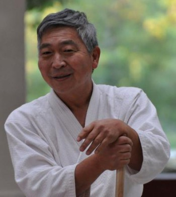

El Mundo
Artículos escritos por: Doshu Kenjiro Yoshigasaki

1.- Porque existe la violencia policíaca?
La violencia policíaca existió todo el tiempo en todo el mundo. Esto sucede cuando uno piensa que hay personas buenas y personas malas. La mayoría de las personas, incluyendo la policía, piensan que las personas buenas crean un mundo bueno y que las personas malas crean un mundo malo. Por eso ellos tratan de educar o castigar a las personas malas para crear un mundo mejor.
Esta es la razón por lo que la personas se vuelven violentas. Nosotros tenemos que tratar con la violencia de la humanidad total. Uno tiene que ver la realidad del mundo en la que la mayoría de las personas son buenas y que estas personas buenas están haciendo cosas malas y creando un mundo malo. Por eso las personas buenas deberían ser educadas de tal modo que nunca hagan cosas malas.
La justicia en la sociedad es necesaria para prevenir que pasen cosas malas. Es importante establecer justicia en la sociedad, pero esa no es la solución para la violencia en este mundo. Como puede educarse a las personas buenas? Yo estuve en la búsqueda de este tema durante los últimos 60 años de mi vida y la única forma que encontré, fue ayudarlos a ver sus pensamientos y su cuerpo.
4 de Junio de 2020
Texto escrito por Doshu Kenjiro Yoshigasaki
Texto traducido por Sensei Norberto Kiman
Conferencia original en Inglés Toitsu.dk - The World
2.- Guerra no es violencia
Yo puedo imaginar que algunos lectores van a quedar muy perturbados por el título de esta conferencia y hasta se vuelvan violentos. La guerra no es violencia, pero es mala, o incluso peor que la violencia. La guerra está robándole a otros matándolos. La violencia no necesariamente incluye el robo.
Tenemos que educarnos a nosotros mismos para ser libres de este instinto animal, el cual aparece como racismo. La educación básica es para vivir y dejar vivir. El instinto animal dice, "Vivir y dejar Morir". Los humanos deben tratar de encontrar una forma de vivir y dejar vivir. Esta es la única forma de liberarse del racismo.
5 de Junio de 2020
Texto escrito por Doshu Kenjiro Yoshigasaki
Texto traducido por Sensei Norberto Kiman
Conferencia original en Inglés Toitsu.dk - The World
3.- Que es el racismo?
La mayoría de las personas piensan que la gente normal no es racista, pero algunas de ellas se vuelven racistas por una educación mala o una mala sociedad. Ese es el error. Todas las vidas son racistas. Los microbios, plantas y animales son todos racistas. El racismo es un instinto animal, por eso cualquier ser humano puede volverse racista en determinado ambiente.
Por eso debemos tratar la guerra de una forma diferente que cuando tratamos la violencia. Mientras un país quiera robar a otros países, la guerra no se va a detener. Las personas deben pensar profundamente si están de acuerdo en vivir sus confortables vidas, sin que su país le robe a otros países. Esta es la única forma de detener la guerra.
5 de Junio de 2020
Texto escrito por Doshu Kenjiro Yoshigasaki
Texto traducido por Sensei Norberto Kiman
Conferencia original en Inglés Toitsu.dk - The World
4.- Comprando el futuro
Yo noto que en los últimos 5 años más o menos, muchas personas usaron la palabra "experiencia" en internet y usaron la palabra por algo que pasará en el futuro, tal como la experiencia que obtendrás si uno compra un smartphone. Esta es una nueva forma de usar la palabra porque "experiencia" se usaba para hablar de algo que sucedió en el pasado. Hay un famoso dicho de Rockefeller, quien hizo una gran fortuna en la Bolsa de Valores en Estados Unidos, "Experiencia es un nombre que uno le pone a sus errores del pasado". La idea general era que uno debía aprender de su experiencia para crear un mejor futuro.
Se hacía difícil conocer el futuro por los cambios impredecibles tales como una guerra, cambio de gobierno, hambruna, virus, enfermedades, etc. y por eso, las personas acostumbraban a crear el futuro con su deseos profundos tales como amor, patriotismo y filosofía. De ese modo "Que hacer" era la pregunta. Los políticos acostumbraban a debatir filosofías políticas, pero en estos días mayormente negocian como distribuir dinero y el "Como hacer" se volvió la pregunta principal. Hemos creado un sistema bancario internacional el cual trata de controlar el futuro con tecnología y fuerza militar. Por eso, el propósito de todo lo que hacemos se volvió el obtener mucho dinero en el futuro. Para obtener dinero en el futuro, tenemos que invertir dinero. En otras palabras nosotros compramos el futuro. Aquellos que tienen más dinero pueden comprar más futuro.
Tenemos que saber lo que estamos comprando y una de las cosas que compramos es la "experiencia" futura. Hemos visto como el omnipotente sistema bancario, tecnología y fuerza militar no pueden tratar con el virus. Es tiempo para que las personas vuelvan a la pregunta más básica, la cual es "Que hacer" para el futuro.
8 de Junio de 2020
Texto escrito por Doshu Kenjiro Yoshigasaki
Texto traducido por Sensei Norberto Kiman
Conferencia original en Inglés Toitsu.dk - The World
5.- Esclavitud
Esclavitud significa un grupo de personas que controla otro grupo de personas para obtener un beneficio. La esclavitud existió en todo el mundo y todavía existe en formas diferentes. La mayoría de las personas imaginan la esclavitud como negros Africanos trabajando en campos de algodón en América o África, pero esa es solo una forma de esclavitud. Al comienzo de la civilización humana, la cual comenzó miles de años atrás, cada país tenía esclavos en su propio territorio. Si el territorio era pequeño como en las tribus Griegas, los esclavos eran extranjeros y esas pequeñas poblaciones de Grecia crearon la así llamada democracia, de forma tal que su ejército consistía de casi toda población masculina. Esto permitía a la sociedad controlar a los esclavos. Mas tarde, cuando los países Europeos se civilizaron, usaron a su propia gente como esclavos. La gente rica, usaba a la gente pobre como esclavos. Esta estructura se basó en la economía del dinero y esto se volvió necesario para tener más plata y oro.
Desde el 1600 los Europeos comenzaron a obtener plata y oro de Sud América y África. Al mismo tiempo, ellos comenzaron a crear una nueva esclavitud la cual se llamó colonización. No había suficiente espacio en los países Europeos y ellos mantenían a sus esclavos fuera de sus países. Rusia y China eran países grandes y por eso ellos no necesitaban importar esclavos sino que solo continuaban usando gente pobre como esclavos dentro de su territorio. Ellos necesitaban a un dictador para controlar a la gente pobre que eran la mayoría. Después de la revolución industrial en Europa, hubo una gran necesidad de ingenieros, científicos, maestros, gerentes, comerciantes, artesanos, etc. a los cuales no se los podía esclavizar. Por eso, la sociedad se volvió democrática, de tal modo que toda la población estuviera unida para desarrollar la industria y la tecnología. Esto permitió a los países Europeos desarrollar la colonización en todo el mundo y mantener a los esclavos fuera de su territorio. Los países grandes tales como Rusia, China y Estados Unidos mantuvieron a sus esclavos dentro del territorio, pero ellos tuvieron que mantener el control militar del mundo para obtener recursos tales como metal, diamantes, petróleo, uranio, etc. En Rusia y China la gente pobre trabaja como esclavos. En Estados Unidos las personas negras, originalmente importadas de África, trabajan como esclavos y eso trae problemas psicológicos llamados racismo.
Europa importó esclavos desde 1960 pero ahora no tienen esa necesidad. Muchos Europeos quieren enviarlos de vuelta a sus países originales y por eso todos los esclavos estan fuera de su territorio. Con el desarrollo tecnológico del futuro será posible producir todo con menos personas. Esto creará una nueva esclavitud dentro de cada país. Aquellos que no tengan un trabajo se volverán esclavos inútiles, los cuales tendrán permitido solo sobrevivir.
12 de Junio de 2020
Texto escrito por Doshu Kenjiro Yoshigasaki
Texto traducido por Sensei Norberto Kiman
Conferencia original en Inglés Toitsu.dk - The World
6.- Que es democracia?
La primer pregunta que deberíamos hacernos es si democracia es el nombre de una filosofía o de un sistema. Yo recuerdo que en 1960 democracia era una filosofía y que discutíamos cual era el mejor sistema para lograr la democracia, el capitalismo o el comunismo. Desde 1970 la mayoría de las personas piensan inconscientemente que la democracia es un sistema que no es compatible con el comunismo por estar basado en el voto. Hay países que para crear un gobierno basado en el voto, crean guerras matando miles de personas inocentes. Democracia debería ser una filosofía y no un sistema. Porqué es tan importante? La filosofía se basa en la pregunta, "Que hacer?" y un sistema se basa en "Como hacer". Es evidente que la primer pregunta debería ser "Que hacer?". Hay diferencia entre los derechos de un animal y los derechos de un ser humano. Los animales básicamente viven por instinto y por eso ellos tienen derecho a sobrevivir en un ambiente predefinido. Por ejemplo un perro necesita comida y agua adecuada y algo de espacio para moverse. Si no se le da suficiente agua o comida, o mantiene a su perro en una caja todo el tiempo, puede ser acusado de un crimen en contra de los derechos del animal. Si le da agua y comida y mantiene a su perro en el jardín, usted está correcto. Sin embargo este mismo ambiente para un ser humano se lo llama una prisión bien equipada. Si un gobierno mantiene a una persona inocente en una prisión bien equipada, lo cual existe en Suecia o Finlandia, esto es todavía un crimen contra los derechos humanos ya que los derechos humanos incluyen el derecho de crear la vida de uno mismo, como uno desea. Por eso el "Que hacer" es lo básico de la humanidad. Una de las formas más importantes para crear la propia vida es la religión. Por eso, la democracia debe incluir la libertad de religión. La Cristiandad no aceptaba otras religiones y así es que por largo tiempo, hubo dictaduras de la iglesia y el gobierno en Europa. Como la iglesia Cristiana se volvió más débil, la idea de democracia nació en Europa para liberar a las personas de la iglesia y el gobierno. En otras partes del mundo fuera de la Cristiandad y el Islam, los gobiernos aceptaron religiones diferentes. Las personas no sufrían del monopolio de las religiones y así nació la idea de democracia. Aún en Europa el Imperio Otomano fue famoso por aceptar religiones diferentes, aunque la mayoría de ellas fueran del Islam. Los países Cristianos atacaron con la estrategia de "Divide y Reina". Como resultado de la destrucción del Imperio Otomano durante la primer y segunda Guerra Mundial, se creó la Turquía moderna, la cual no acepta mucho las religiones diferentes.
La siguiente parte importante de la democracia es la libertad de pensamiento. Esto debería estar separado de la libertad de habla o libertad de expresión. Los pensamientos están dentro de cada ser humano. El habla o expresión están en la sociedad y por eso está siempre la pregunta de cuál es el límite. Es evidente que uno no debería expresarse o hablar como uno quiere. No es bueno expresar racismo, abuso sexual, sexo infantil, atacar la religión de otros, etc. y ahora el mundo entero está discutiendo que y como controlar la expresión y el habla. Dado que la libertad de expresión es siempre un compromiso en la sociedad, deberíamos primero establecer la libertad de pensamientos. Parece como que el mundo académico acuerda que el lenguaje humano, diferente del lenguaje animal, está hecho para desarrollar los pensamientos. El mundo académico se basa en la escritura y por eso todo es pensamiento. Sin embargo, un ser humano en el mundo real se basa en la imaginación y no en los pensamientos. Por eso la verdad es que el lenguaje humano está hecho para desarrollar la imaginación. El significado de cada palabra solo puede ser imaginación y cada ser humano tiene su propia imaginación. Esto significa que cada ser humano define cada palabra que usa. Sin embargo, muchas personas piensan que deberían usar cada palabra de acuerdo al diccionario. En Francia la "Academia Francesa" reclama que ellos deberían decidir como tiene que ser el idioma Francés. Esto es una dictadura intelectual y no es la realidad. Yo recuerdo que hace 35 años una mujer Alemana me acusó muy enojada: "Porque no usa usted el Inglés de acuerdo al diccionario?". El príncipe de Gales muchos años atrás declaró, "El idioma Inglés es el mayormente usado en el mundo y deberíamos mantener el Inglés correcto" y algunos periodistas lo criticaron acerca de que él no estaba hablando el Inglés correcto.
La realidad es que cada ser humano está participando en el desarrollo de cada idioma pero la mayoría de las personas están solo siguiendo a la sociedad. Entonces la sociedad no será un buen lugar para las personas. Cada persona debe conscientemente definir cada palabra que usa para participar activamente en el desarrollo de cada idioma. Entonces está creando una sociedad que es buena para las personas. Eso es democracia a través de la libertad de pensamientos. Aikido es una forma de expresarnos nosotros mismos en esta sociedad para crear un mundo mejor. Debemos primero hacernos una pregunta: "Que hacer" y pensar con cada palabra definida por nosotros mismos.
18 de Junio de 2020
Texto escrito por Doshu Kenjiro Yoshigasaki
Texto traducido por Sensei Norberto Kiman
Conferencia original en Inglés Toitsu.dk - The World
7.- Historia y Democracia
La mayoría de las personas creen que en la escuela aprendieron historia e inconscientemente, su cerebro fue lavado por los medios y otras personas. Todos los seres humanos tienen una tendencia y creen en una historia equivocada. Esto significa que todos están errados. Esta verdad fue conocida en las religiones en las que las personas no debían juzgar a otros, sino seguir el juicio de Dios. Dado que la ciencia se hizo cargo de la religión muchas personas, equivocadamente, piensan que ellas pueden juzgar. Es necesario entender cuál es el límite de la ciencia. La ciencia y la inteligencia artificial (IA) pueden solo saber "cómo hacer" y nunca pueden saber "qué hacer". Algunos pueden discutir que la IA puede decir que hacer, pero la IA está siempre basada en el "qué hacer" que fue decidido por los seres humanos. Desde la segunda revolución industrial, con el petróleo, el mundo ha estado persiguiendo el "cómo entender" el objetivo de que "uno vive tanto como sea posible, con tanto dinero como sea posible". Esto es lo que todos los gobiernos en el mundo intentaron en la crisis de Covid. Ellos tuvieron que decidir el balance entre "vivir tanto como sea posible" y "con tanto dinero como sea posible."
Toda la historia es una opinión personal del pasado y es imposible decidir cuál es la historia correcta. Cada gobierno tiene que decidir qué historia deben enseñar los maestros de escuela. Por eso, cada uno tiene una tendencia. La única forma de ser libre de este lavado de cerebro es crear la propia historia. Usted debe crear la propia historia, su familia, su país y su mundo, así usted puede crear el mundo que cree que es bueno.
La historia decidida por el gobierno, solo justifica el pasado y esto es así porque los gobiernos quieren el acuerdo de otros. La política es básicamente una actividad para obtener el acuerdo entre las personas. Por eso la historia debe explicar el mundo actual de tal modo que nosotros podamos acordar con ese mundo. Sin embargo, tenemos que crear un mundo mejor para el futuro. Así, nuestra historia debería explicar el futuro. El gobierno no puede hacer esto, porque las personas no acuerdan con el futuro. Eso es por lo que la historia aceptada por el gobierno, es inútil para crear un mundo mejor y eso es por lo que cada uno de nosotros debe crear su propia historia del mundo, que nos ayude a crear un futuro mejor.
22 de Junio de 2020
Texto escrito por Doshu Kenjiro Yoshigasaki
Texto traducido por Sensei Norberto Kiman
Conferencia original en Inglés Toitsu.dk - The World
8.- Que es humanidad?
El mundo está juzgando a las personas con la frase "Crimen contra la Humanidad" pero, saben ellos lo que significa humanidad? Usted debe entender primero la diferencia entre la vida y la materia. Existe una idea en la que la Inteligencia Artificial (IA) es mejor que el cerebro humano y hay muchas personas que quieren promover esta idea. Sin embargo, esto ya fue tratado en la película "Terminator", la cual es una guerra entre humanos y la IA. Las películas de Estados Unidos tienden a mostrar que los humanos tienen sentimientos y que esto debe ser respetado. Esta es una idea muy peligrosa. Es conocido, desde miles de años atrás por el dicho: "El camino al infierno está pavimentado con buenas intenciones". Adolf Hitler fue conocido como una persona sentimental y muchas personas peligrosas son sentimentales. Muchas personas mezclan amor con sentimientos.
La diferencia entre la vida y la materia son las relaciones. Vida es relación, toda la vida se trata de apoyarse unos a otros. Por eso es que tenemos que entender esta relación, para mantener la vida en este mundo. Entonces, la diferencia entre los humanos y otros animales, es la imaginación. Los animales no tienen mucha imaginación, pero la actividad humana se basa en la imaginación. Por eso, los humanos pueden ser muy buenos o muy malos de acuerdo a la imaginación. Nosotros estamos siempre mejorando nuestra imaginación independientemente de nuestras actividades tales como arte, ciencia, trabajo normal, pasatiempos, etc. Tenemos que intentar mejorarnos a nosotros mismos todo el tiempo y así la humanidad prevalece en este mundo. Si nos detenemos, descenderemos y perderemos la humanidad.
25 de Junio de 2020
Texto escrito por Doshu Kenjiro Yoshigasaki
Texto traducido por Sensei Norberto Kiman
Conferencia original en Inglés Toitsu.dk - The World
9.- Porque no aprendemos del Covid?
Para aprender algo, uno necesita tener en claro el propósito de lo que uno quiere lograr. Por eso los científicos y doctores aprendieron mucho de la crisis. Las personas muy ricas, quienes arriesgaban mucho dinero, también aprendieron mucho porque ellos definitivamente quieren controlar el mundo para mantener su riqueza.
Los Europeos normales viven con dependencia de su gobierno, por eso ellos solo quieren vivir como antes. Por eso ellos no quieren aprender nada.
30 de Junio de 2020
Texto escrito por Doshu Kenjiro Yoshigasaki
Texto traducido por Sensei Norberto Kiman
Conferencia original en Inglés Toitsu.dk - The World
10.- Libertad es una idea equivocada
La palabra "libertad" o "liberté" se comenzó a usar en la sociedad para sublevarse en contra de los gobiernos que no le permitían vivir a las personas. Eso es por lo que las personas comenzaron a pelear en contra del gobierno arriesgando sus vidas.
Ahora las personas pueden vivir en forma confortable con sus gobiernos y por eso no tratan de pelear en su contra. Los políticos en países democráticos tienen que hacer felices a las personas para ser elegidos y así ellos usan el dinero y el deseo. Ellos prometen más dinero y más deseo. De ese modo libertad cambió el significado y comenzó a querer decir, hacer o decir lo que uno quiere. Hacer o decir lo que uno quiere es un comportamiento animal.
En el mundo animal o en una sociedad de chicos o personas infantiles, el más fuerte castigará al más débil y así usted aprende naturalmente lo que no debería hacer o decir. Desde hace 50 años, en los países ricos, el gobierno le prohíbe a las personas castigarse unos a otros, y por eso las personas comenzaron a creer que podían hacer o decir lo que quisieran. Naturalmente, eso crea conflicto y por eso el gobierno decide lo que usted no debería hacer o decir. Ahora las personas creen que pueden hacer o decir cualquier cosa que les guste, mientras el gobierno se los permita.
El significado original de libertad, el cual fue una forma de pelear en contra del gobierno, se volvió una forma del gobierno para controlar a las personas.
1 de Noviembre de 2020
Texto escrito por Doshu Kenjiro Yoshigasaki
Texto traducido por Sensei Norberto Kiman
Conferencia original en Inglés Toitsu.dk - The World
11.- La única forma de hacer un mundo mejor
Los seres humanos actúan basados en sus imaginaciones. Uno no puede controlar las propias imaginaciones y por eso cuando uno tiene una mala imaginación, uno actúa mal. Si uno tiene una buena imaginación, uno actúa bien. Dado que no podemos controlar nuestras imaginaciones, tampoco podemos controlar nuestros actos. Por eso la única forma de hacer un mundo mejor es expandir nuestras imaginaciones creando armonía en ellas.
Nosotros creamos arte al expresar nuestras imaginaciones de forma armoniosa. De ahí que cualquier expresión de armonía sea buena para el mundo. Normalmente, a esta expresión armoniosa se la llama arte, pero hay muchas mas formas de expresar armonía.
El lenguaje es una de las actividades humanas más importantes. Nosotros podemos crear armonía en nuestro lenguaje creándolo en base al mundo real. El idioma completo debe ser capaz de representar el mundo entero, aunque es imposible hacerlo perfectamente. Así que tenemos que cambiar el significado de cada palabra. La mayoría de las personas creen que deberían usar cada palabra de acuerdo al diccionario. Sin embargo, el significado de cada palabra ha estado cambiando durante la historia humana. Esto es por lo que cambiaron las imaginaciones de la mayoría de las personas y esto mismo cambió el significado de ciertas palabras. Los diccionarios solo siguen este cambio.
Por eso es posible crear armonía en este mundo creando un nuevo significado para cada palabra. Este nuevo significado se crea tratando de entender el mundo entero y el universo. Si usted es inteligente y quiere crear un mundo mejor, por favor trate de expresar todo, aún si el significado de cierta palabra es diferente del que le da la sociedad y el diccionario. No se exprese solo usted mismo, su vida, o su país. De ese modo creará conflicto en el mundo.
2 de Noviembre de 2020
Texto escrito por Doshu Kenjiro Yoshigasaki
Texto traducido por Sensei Norberto Kiman
Conferencia original en Inglés Toitsu.dk - The World
12.- Europa
Originalmente, Europa era solo una pequeña parte del mundo pero desde el tiempo del Imperio Romano, Europa se expandió a través del planeta; desde el continente Americano hasta el Africano, Australia y los lugares intermedios. Básicamente, Europa dominó el mundo entero. Los seres humanos siempre tienen una filosofía, y es necesario, por lo tanto, entender la filosofía Europea, porque esta filosofía también conquistó al mundo.
La base de la filosofía Europea viene de la Cristiandad. Esto es la creencia en un dios y el dualismo el cual le sigue lógicamente. Es importante saber que el mundo moderno está gobernado por esta filosofía. El dualismo, como sabemos, existe como el bien o el mal, correcto o equivocado, lo cual es propagado a través de la iglesia. La segunda parte de la filosofía Europea es el de declarar los derechos de uno. Uno debe declarar los derechos de uno ya que de otro modo uno los pierde.
Una vez, un grupo de gente estaba en Furusato y no había papel en el baño. El grupo me contactó y me preguntó si yo podía comprar el papel para el baño. Yo les dije que ellos debían haber traído el papel, porque en Furusato la gente debe traer lo que ellos consumen. Entonces ellos me replicaron que yo debería haberles dicho acerca de esto antes que ellos viajaran. Ésta es la filosofía Europea, dado que yo no les dije que trajeran el papel del baño, era mi culpa que ellos no lo hubieran traído.
Uno puede ver solo lo que pasó en América. Cuando los Europeos viajaron a América, las personas que estaban viviendo allí no les dijeron a los Europeos que América era su tierra. Por eso, los Europeos declararon que la tierra, ahora llamada América, le pertenecía a Europa y mataban a cualquiera que no lo aceptaba.
28 de Diciembre de 2020
Texto escrito por Doshu Kenjiro Yoshigasaki
Texto traducido por Sensei Norberto Kiman
Conferencia original en Inglés Toitsu.dk - The World
Artículos

Bibliografía

Mirá videos de la práctica